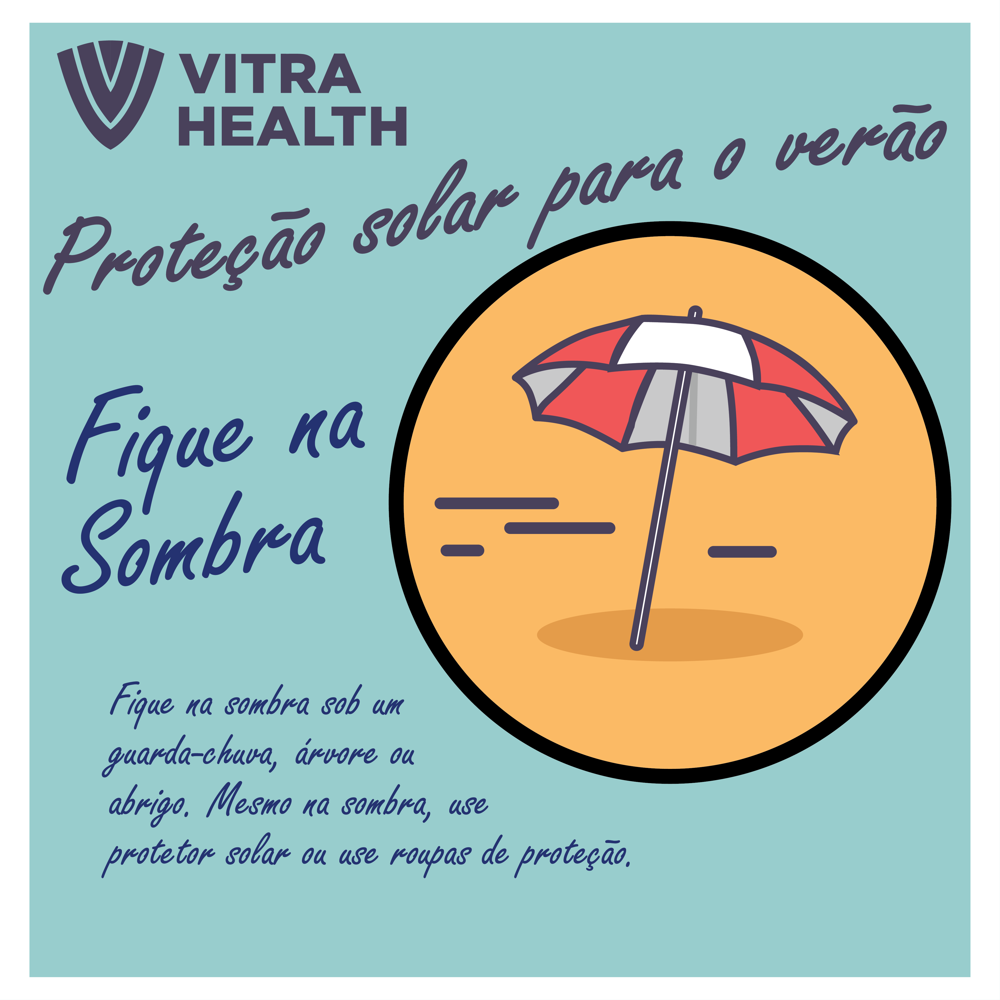
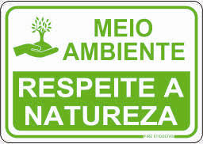
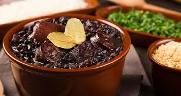

Dicas para uma Viagem Incrível pela Linha Verde
Confira algumas dicas essenciais para aproveitar ao máximo sua viagem pela Linha Verde, na Bahia!

Prepare-se para o calor
A Linha Verde tem um clima tropical quente, então lembre-se de levar roupas leves, protetor solar e se hidratar constantemente.

Respeite a natureza
A região possui áreas de preservação ambiental. Evite deixar lixo nas praias e trilhas para manter a beleza local intacta.

Coma comida local
Experimente pratos típicos da Bahia, como o acarajé e a moqueca, para uma imersão completa na cultura local.
Leve dinheiro em espécie
Embora as cidades ao longo da Linha Verde possuam caixas eletrônicos, é bom ter dinheiro em espécie para compras em locais mais afastados.
Verifique a previsão do tempo
O clima pode mudar rapidamente. Verifique a previsão do tempo antes de suas atividades ao ar livre.